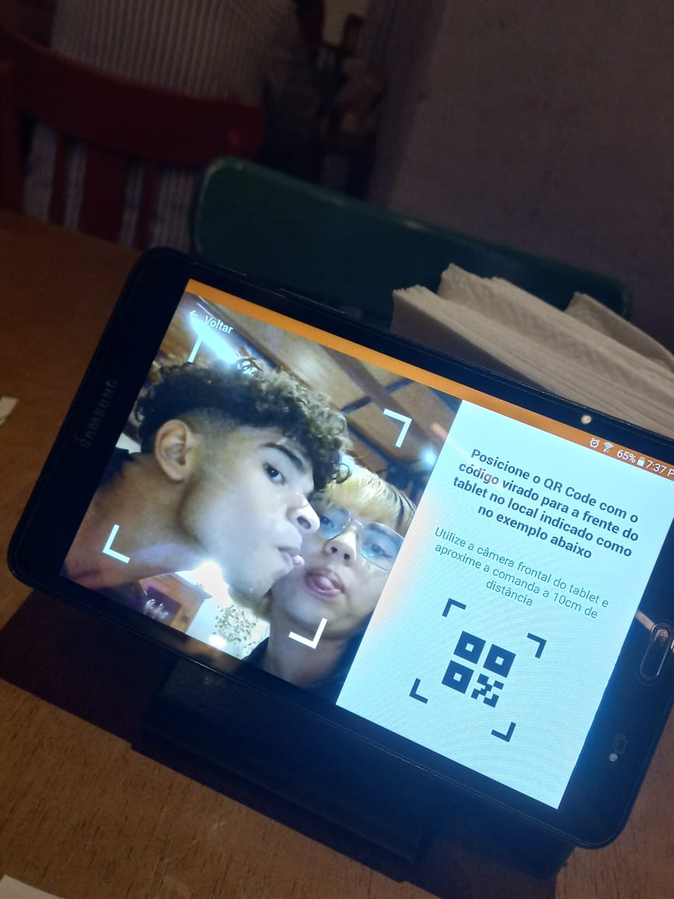
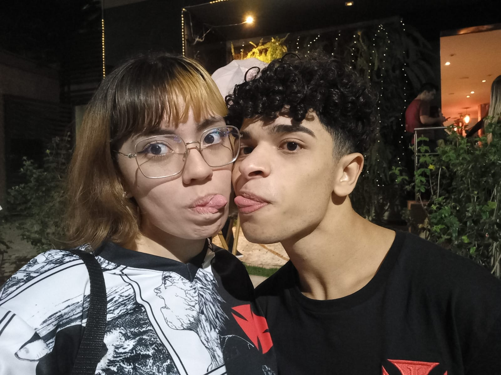

Lembro até hoje das maluquices que fiz pra te tirar um sorriso nesse dia...

Eu gosto muito, foi uma das primeiras vezes que saímos e foi um momento muito legal pra mim, assim como todos
Foi a primeira vez que a gente fez algo completamente atoa e de namorados, você me cuidou esse dia e me senti amado.
Foi a última vez que você quis sair pra fazer algo diferente, morri de passar mal depois, mas valeu a pena.
Foi um dos melhores presentes que já ganhei, te amo demais!